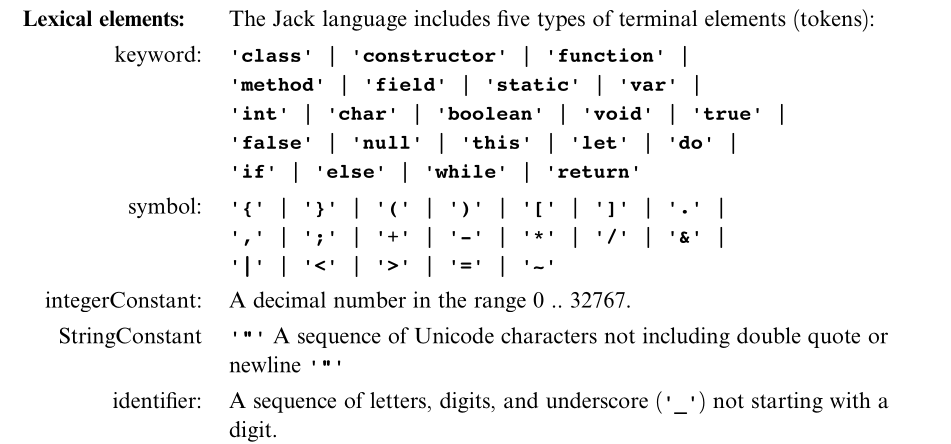
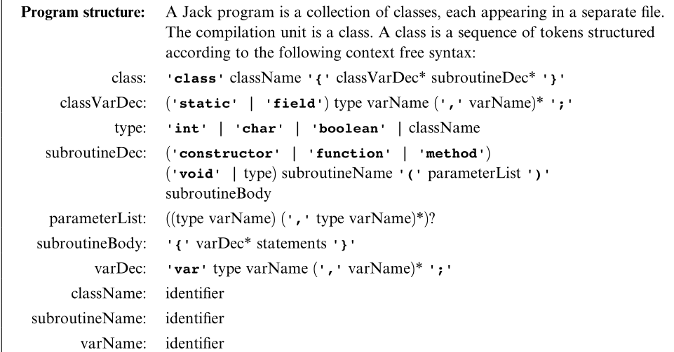
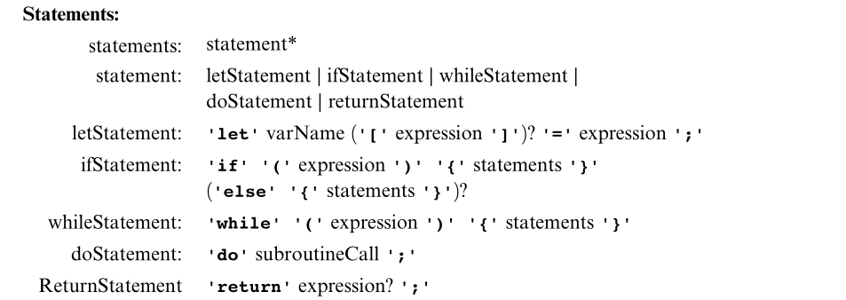
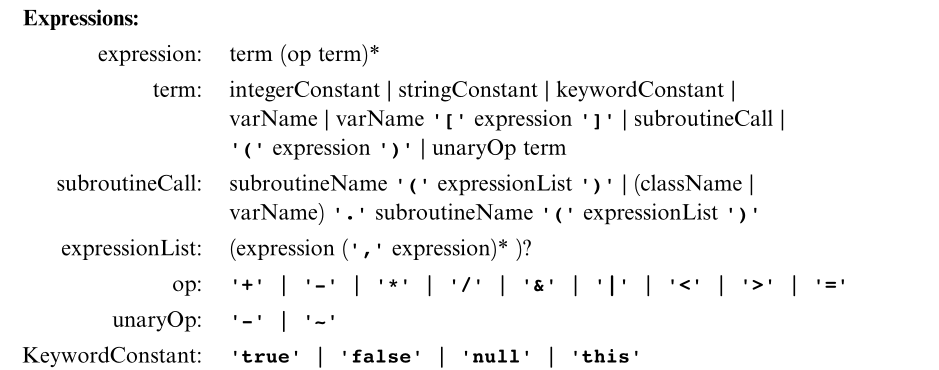
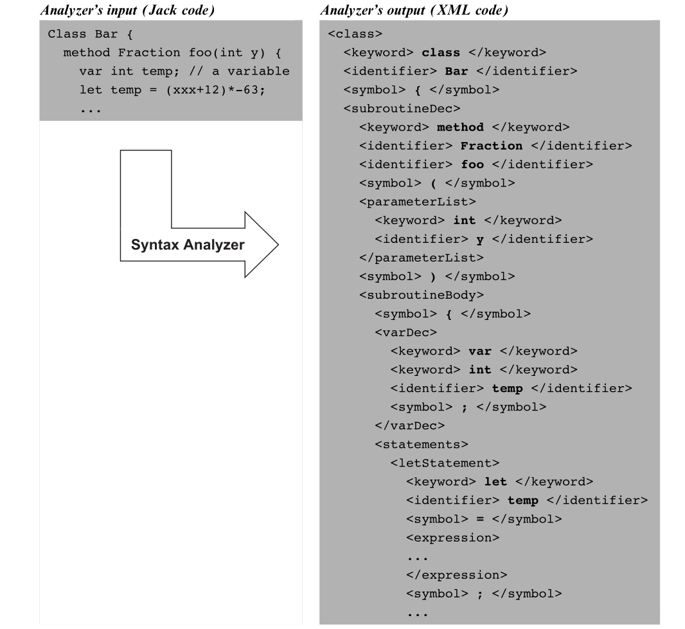

Building the Jack Syntax Analyzer
From the Jack grammar to structured XML.
Find the Parts Inside a Jack Class
class Main {
function void main() {
var int x;
let x = 2 + 3;
return;
}
}Main contains main().
let and return form the function body.
2 + 3 supplies the value for x.
Today's goal: recognize these parts and write their structure as XML, so we can test the syntax analyzer before generating VM code.
Next: Which individual tokens make up this source?
Start with Jack's Five Token Kinds

The tokenizer recognizes these five kinds. The parser then uses the tokens—not raw characters—to recognize larger parts.
Next: How do tokens form a complete class?
The Shape of a Jack Class

Read from class downward: class-variable declarations come before subroutines. A subroutine body contains local declarations followed by statements.
Try matching a real class to these named parts.
Match Source Lines to Grammar Elements
class Counter {
field int value;
constructor Counter new() { ... }
method void increment() { ... }
}CounterclassNamefield int value;classVarDecconstructor ...subroutineDecmethod ...subroutineDecNext: What can appear inside a subroutine body?
Five Alternatives, Recognized by One Token

letifwhiledoreturnThe first keyword selects the rule. compileStatements() stops when the next token is not one of these five statement starters.
Start with the simplest statement: how would we parse return?
How Would You Implement compileReturn()?
returnStatement: 'return' expression? ';'Write the routine for both return; and return x;. Reveal the code after students have tried.
compileReturn():
openTag('returnStatement')
expectAndWrite('return')
if currentToken != ';':
compileExpression()
expectAndWrite(';')
closeTag('returnStatement')Convention: expectAndWrite(t) checks, writes the XML leaf, and advances; expectIdentifierAndWrite() does the same for an identifier. Treat compileExpression() as a helper for now—we will design it later in this lecture. Small helpers need not create an enclosing XML tag.
Next: a do statement contains a subroutine call.
How Would You Implement compileDo()?
doStatement: 'do' subroutineCall ';'Try do Output.printInt(x);. Which routine should recognize the call between do and ;?
compileDo():
openTag('doStatement')
expectAndWrite('do')
compileSubroutineCall()
expectAndWrite(';')
closeTag('doStatement')compileSubroutineCall() is a helper we will design after expression lists. It writes tokens inside the doStatement, not an extra subroutineCall XML tag.
Next: an if statement has an optional else branch.
How Would You Implement compileIf()?
ifStatement: 'if' '(' expression ')' '{' statements '}'
('else' '{' statements '}')?Handle both an if without else and one with else.
compileIf():
openTag('ifStatement')
expectAndWrite('if'); expectAndWrite('(')
compileExpression()
expectAndWrite(')'); expectAndWrite('{')
compileStatements()
expectAndWrite('}')
if currentToken == 'else':
expectAndWrite('else'); expectAndWrite('{')
compileStatements()
expectAndWrite('}')
closeTag('ifStatement')Next: while follows the same pattern, without else.
How Would You Implement compileWhile()?
whileStatement: 'while' '(' expression ')' '{' statements '}'Use compileIf() as a guide. What changes?
compileWhile():
openTag('whileStatement')
expectAndWrite('while'); expectAndWrite('(')
compileExpression()
expectAndWrite(')'); expectAndWrite('{')
compileStatements()
expectAndWrite('}')
closeTag('whileStatement')Finally, a let statement can assign to a variable or an array entry.
How Would You Implement compileLet()?
letStatement: 'let' varName ('[' expression ']')?
'=' expression ';'Cover both let x = 1; and let a[i] = x;.
compileLet():
openTag('letStatement')
expectAndWrite('let')
expectIdentifierAndWrite()
if currentToken == '[':
expectAndWrite('[')
compileExpression()
expectAndWrite(']')
expectAndWrite('=')
compileExpression()
expectAndWrite(';')
closeTag('letStatement')These routines call compileExpression(). What does an expression contain?
Read the Complete Expression Rules

An expression begins with a term, then may continue with operator–term pairs. A term can itself contain another expression.
The symbol * appears twice here, with two different meanings.
Two Meanings of *
expression: term (op term)*The unquoted * says “zero or more operator–term pairs.” It is an instruction to the parser, not a Jack token.
op: '+' | '-' | '*' | ...The quoted '*' is a Jack operator token. For now, the parser writes <symbol> * </symbol>; it does not perform multiplication.
Parsing plan: recognize a term; while the next token is an operator, record that operator and recognize another term.
Let's trace a parenthesized expression containing multiplication.
Parse 2 + (3 * 4)
Which parts belong to the outer expression, and which belong to the expression inside the parentheses?
let result = 2 + (3 * 4);Outer expression: term 2, operator +, term (3 * 4).
Inside the parentheses: term 3, operator *, term 4.
The inner compileExpression() stops before ); the outer one stops before ;. Parentheses make the intended grouping explicit—Jack does not require them around every expression.
How can parser routines follow this nesting?
Parse Terms, Then Operator–Term Pairs
compileExpression():
compileTerm()
while currentToken is an operator:
compileOperator() // write operator and advance
compileTerm()
compileTerm():
if currentToken == '(':
writeAndAdvance('(')
compileExpression()
writeAndAdvance(')')
else:
handle the other term formsA parenthesized expression is a term. The recursive call handles its contents; the surrounding call then continues with any following operator–term pairs. compileOperator() only records the operator—it does not calculate a value.
Calls can pass zero or more expressions. How do we parse that list?
How Would You Implement compileExpressionList()?
expressionList: (expression (',' expression)*)?It must accept both f() (empty list) and f(x, 2 + y). The caller has already read (.
compileExpressionList():
openTag('expressionList')
if currentToken != ')':
compileExpression()
while currentToken == ',':
expectAndWrite(',')
compileExpression()
closeTag('expressionList')The list leaves the closing ) for its caller. compileExpression() stops before a comma or closing parenthesis because neither is an operator.
Now use this list inside a subroutine call.
How Would You Implement compileSubroutineCall()?
subroutineCall: subroutineName '(' expressionList ')' |
(className | varName) '.' subroutineName '(' expressionList ')'Cover move(x) and Math.multiply(x, 2).
compileSubroutineCall():
expectIdentifierAndWrite()
if currentToken == '.':
expectAndWrite('.')
expectIdentifierAndWrite()
expectAndWrite('(')
compileExpressionList()
expectAndWrite(')')This helper writes tokens inside the surrounding statement or term. The Project 10 XML has an expressionList tag, but no separate subroutineCall tag.
When a term starts with an identifier, how do we choose its form?
Distinguish Identifier-Led Terms
For each token prefix, choose the grammatical form.
x +variablea [array entrymove (subroutine callMath .qualified subroutine callThis is the principal place where the compilation engine needs one-token lookahead.
We can now recognize the parts. How do we record them for testing?
Our Goal: Record the Parse Tree as XML

This is the output promised at the start: nested XML records which grammar rules matched the source. We can compare it with reference XML before generating VM code.
How do we tag individual tokens versus complete constructs?
Tokens and Larger Parts Get Different Tags
<keyword> return </keyword>
<symbol> ; </symbol>The tag names the token's type.
<returnStatement>
... tokens inside ...
</returnStatement>The outer tag groups the tokens that form a return statement.
Write the XML for a Return Statement
return;<returnStatement>
<keyword> return </keyword>
<symbol> ; </symbol>
</returnStatement>No <expression> appears because the expression in the grammar is optional.
Next: Which software modules produce this XML?
Three Modules, Three Responsibilities
Keeping these responsibilities separate allows each part to be implemented and tested independently.
The Top-Level Driver
- Accept one
Xxx.jackfile or a directory containing Jack files. - For each source file, create a
JackTokenizer. - Create the corresponding
Xxx.xmloutput file. - Create a
CompilationEngineand begin withcompileClass().
Xxx.jack → Xxx.xml
Each Routine Handles Exactly One Construct
Start: the first token of the construct is current.
Do: check expected tokens, ask other routines to handle named parts, and write the matching XML tags.
Finish: move to the first token after this construct. The caller can continue from there.
compileClass()compileStatements()compileWhile()compileExpression()compileTerm()Build and Test in Two Stages
Generate XxxT.xml. Compare it with the supplied token files before beginning the parser.
Begin with expressionless programs, then add expressions and test complete Jack programs.
ExpressionlessSquare→Square→ArrayTestUse the supplied comparison files as the contract. Indentation is for readability; the XML structure and tokens must match.
The Syntax Analyzer Makes Structure Explicit
Next chapter: keep the parser, add semantic information, and generate executable VM code.